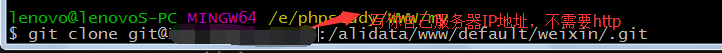

搭建Git服务器
在使用Git，大部分开发者都是将Github作为远程仓库。但是，当我们不想将代码开源，而且又有自己的服务器(以CentOS系统为例),那就可以自己搭建一台Git服务器作为自己的私有仓库。
首先，你得有root权限。步骤如下：
第一步：安装Git
# yum -y install git
第二步：创建Git用户，这个用户是用来运行Git的。(可以不为这个用户设置密码)
#useradd git
第三步：创建私钥公钥
创建SSH Key，在用户主目录下(Window的在C:\Users\你的用户名\.ssh下)，在Window下打开Git Bash,使用如下命令创建
ssh-keygen -t rsa -C "youremail@example.com" //邮箱写你自己的
去到用户主目录里找到.ssh目录，有id_rsa和id_rsa.pub两个文件，id_rsa是私钥，不要泄露出去，id_rsa.pub是公钥，可以公开。
将所有需要登录的用户的公钥，也就是id_rsa.pub文件的内容，把公钥放到/home/git/.ssh/authorized_keys文件里，一行一个。如果没有这个文件，就自行创建。
第四步：初始化Git仓库
先选定一个目录作为Git仓库，假设是/usr/local/apache/htdocs/test/tmp.git
在/usr/local/apache/htdocs/test/目录下输入命令：
git init --bare tmp.git //--bare表示创建裸仓库，只会生成用于记录版本库历史记录的.git文件。没有工作目录
授权：
chown -R git:git tmp.git
第五步：不让git 用shell登录
为了安全，创建的git用户不可以登录shell,通过编译/etc/passwd文件,找到git用户
git:x:505:505::/home/git:/usr/bin/bash
改成：
git:x:505:505::/home/git:/usr/bin/git-shell
最后一步，在你的Window电脑克隆远程仓库的代码
git clone@ip:/usr/local/apache/htdocs/test/tmp.git例如：